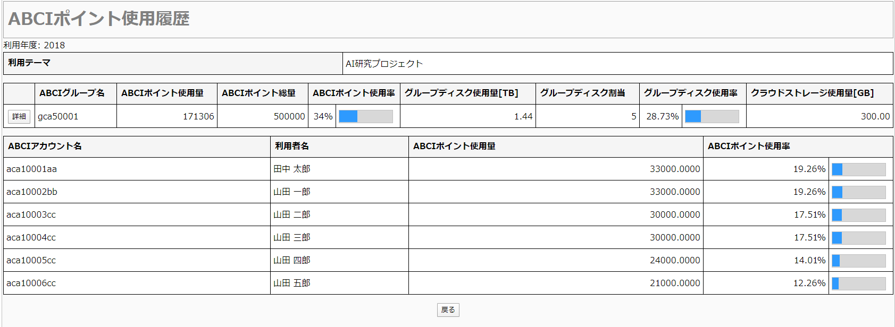
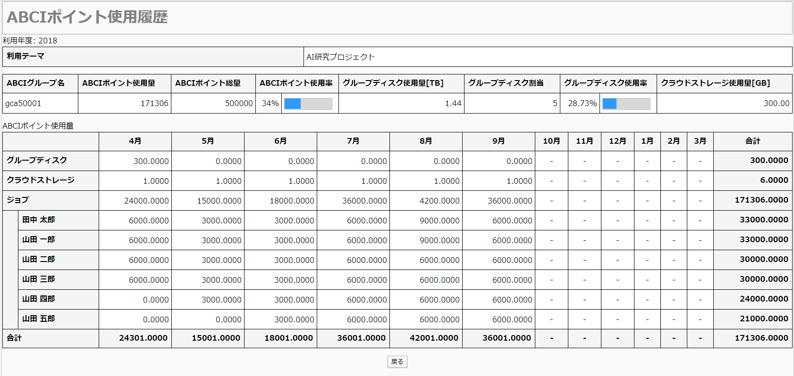
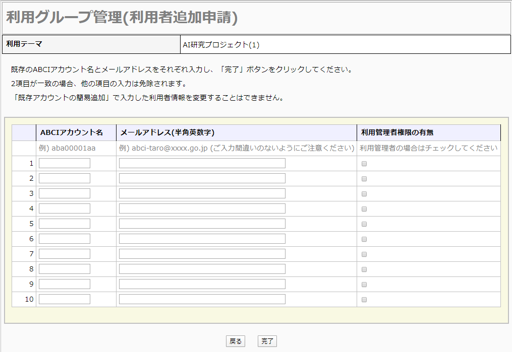
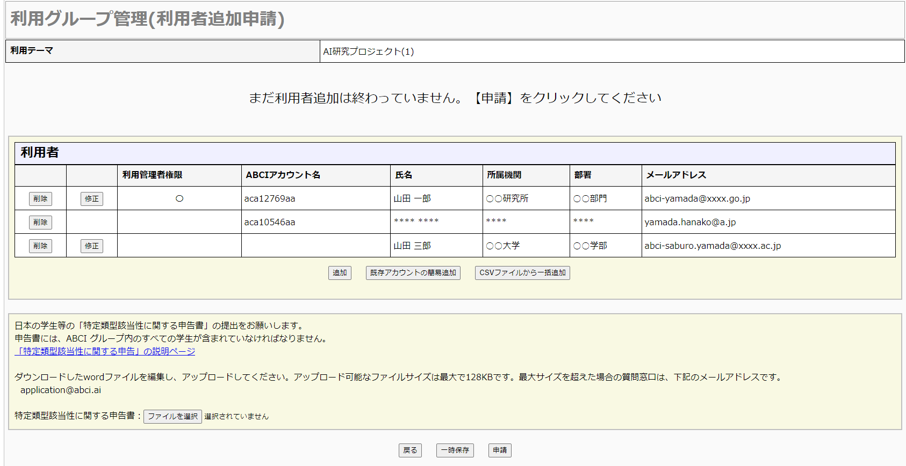
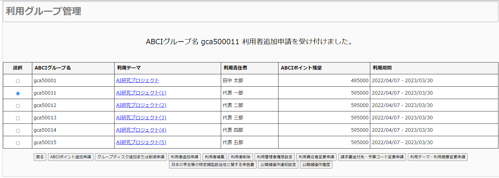
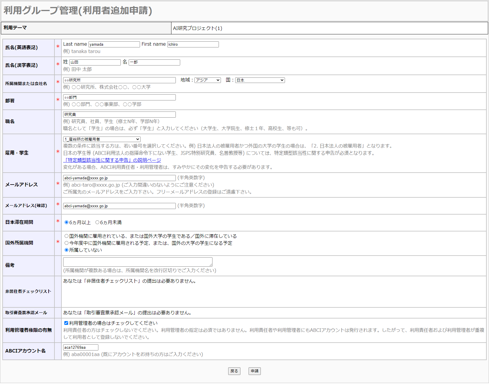
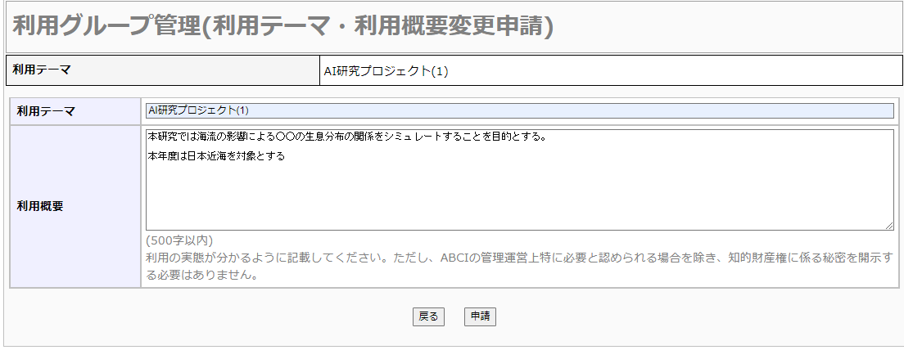
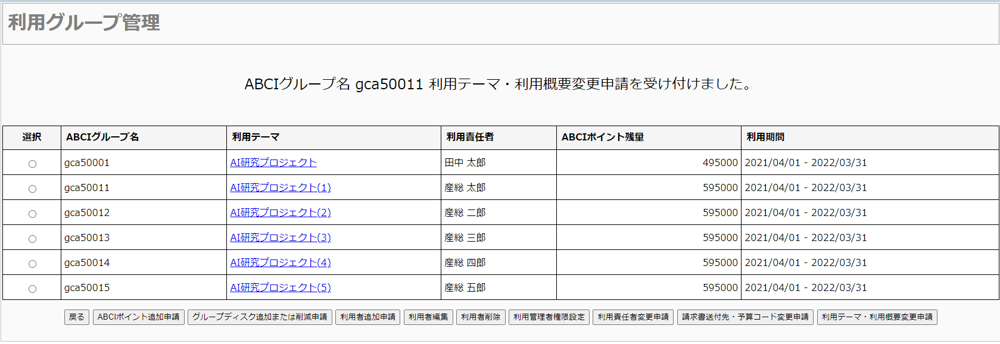

3. 利用管理者権限
3.1. 概要
利用責任者、及び利用管理者権限を付与された利用者のみ、以下の機能を使用することができます。
- 「ノード予約」の追加、削除
- 「ABCIポイント使用履歴」の参照
- 「ABCIポイント追加履歴」の参照
- 「利用グループ管理」
- 「クラウドストレージ管理」
3.2. ノード予約・キャンセル
3.2.1. ノード予約追加
ノード予約一覧画面の[予約追加]をクリックします。
ノード予約に関する各項目を入力します。 「*」マークが付いているものは必須項目です。 [追加]をクリックすると確認ダイアログが表示されます。追加する場合は、[OK]をクリックします。
予約追加が完了した場合、予約追加完了画面が表示されます。
3.2.2. 予約キャンセル
予約一覧画面でキャンセルする予約にチェックを付け、[予約キャンセル]をクリックすると確認ダイアログが表示されます。 予約をキャンセルする場合は[OK]をクリックします。
![[[Screenshot]]](../img/2_06_D.png)
予約キャンセルが完了すると、キャンセル完了画面が表示されます。
3.3. ABCIポイント使用履歴
ABCIポイント使用履歴画面でABCIグループに登録されている利用者の使用状況を参照することができます。

月ごとの使用量を参照する場合は[詳細]をクリックします。

利用者ごと、月ごとのABCIポイント使用状況が表示されます。
Note
- ジョブはOn-demand、Spot、ReservedサービスでのABCIポイント使用量の合計値になります。
- On-demandおよびSpotサービスのジョブ実行から終了の間に月を跨ぐ場合、当該ジョブのポイント使用量は全てジョブを投入した月にてカウントします。ジョブ終了後の返却処理も、ジョブ実行開始した月の使用ポイントに対して実施されます。
- Reservedサービスの使用ポイントは、予約を作成した月にカウントします。予約を取り消した場合、予約を作成した月の使用ポイントから当該予約分のポイントが削減されます。
3.4. ABCIポイント追加履歴
サイドメニューから[ABCIポイント追加履歴]をクリックします。
ABCIグループ一覧画面が表示されます。
ABCIグループ一覧画面から参照したいABCIグループを選択して[履歴表示]をクリックします。
![[[Screenshot]]](../img/3_03_B.png)
選択したABCIグループの追加履歴が表示されます。
3.5. 利用グループ管理
サイドメニューから[利用グループ管理]をクリックします。
![[[Screenshot]]](../img/3_04_A.png)
3.5.1. ABCIポイント追加申請
利用グループ管理の一覧画面から操作したいABCIグループを選択し、[ABCIポイント追加申請]をクリックします。
追加ABCIポイント数を入力し、[申請]をクリックすると確認ダイアログが表示されますので、[OK]をクリックします。
![[[Screenshot]]](../img/3_04_C.png)
ABCIポイント追加申請完了画面が表示されます。
申請者宛にメールで申請内容が通知されます。
申請が承認されると申請者宛にメールでその旨が通知されます。
申請者以外の利用責任者、利用管理者には通知されません。
3.5.1.1. 差し戻されたABCIポイント追加申請の再申請
申請内容に不備があった場合、差し戻しされる場合があります。 差し戻しされると、責任者のメールアドレス宛に差し戻し理由と再申請用の URLが通知されます。 再申請をする場合は、再申請用のURLから行って下さい。
入力内容修正画面から差し戻し理由を修正し、再申請することができます。
3.5.2. グループディスク追加または削減申請
利用グループ管理の一覧画面から操作したいABCIグループを選択し、[グループディスク追加または削減申請]をクリックします。
![[[Screenshot]]](../img/3_04_E.png)
「追加」または「削減」を選択、グループディスク数を入力し、[申請]をクリックすると確認ダイアログが表示されますので[OK]をクリックします。
Note
各グループディスクは最大250TBまで申請できます。
250TB以上のご利用をご希望の場合、利用責任者もしくは利用管理者より qa@abci.ai までご連絡ください。
qa@abci.ai へのご連絡については お問い合わせ をご参照ください。
グループディスク追加または削減申請が完了すると、グループディスク割り当てがすぐに追加または削減されます。
Note
追加申請：追加容量に応じた申請月度から年度末までの ABCI ポイントが消費されます。
削減申請：削減容量に応じた申請翌月度から年度末までの ABCI ポイントが返却されます。
Warning
削減申請において、現在使用中のディスク容量を下回るような申請はできません。
3.5.3. 利用者追加申請
利用グループ管理の一覧画面から操作したいABCIグループを選択し、[利用者追加申請]をクリックします。
![[[Screenshot]]](../img/3_04_G.png)
本人確認依頼を参照し、同意する場合は[全てに同意して次へ進む]をクリックします。
画面上の[追加]をクリックすると利用者入力画面に遷移します。
![[[Screenshot]]](../img/3_04_I.png)
ABCIグループに追加する利用者について各項目を入力して[完了]をクリックします。
「*」マークが付いているものは必須項目です。
国外の機関に所属している場合は、「国外所属機関」の該当する項目をを選択してください。
「雇用・学生」が日本の学生等に相当する場合は、特定類型該当性に関する申告を選択してください。
非居住者チェックリストが必要な場合はアップロードしてください。
![[[Screenshot]]](../img/3_04_J.png)
入力した利用者の一覧が表示されます。
ABCIアカウントを取得済みの利用者を追加する場合は、[既存アカウントの簡易追加]をクリックし、ABCIアカウント名入力画面に遷移します。

登録済みのABCIアカウント名とメールアドレスを入力して[完了]をクリックします。 利用管理者として登録する場合は「管理者権限の有無」をチェックしてください。
![[[Screenshot]]](../img/3_04_L.png)
入力した利用者の一覧が表示されます。
簡易追加で入力した利用者の場合、氏名、所属機関等が「****」と伏字で表示されます。
複数の利用者を一括で追加する場合は、[CSVファイルから一括追加]をクリックし、CSVファイル選択画面に遷移します。
「一括追加用ファイルフォーマットダウンロード」からCSVファイルをダウンロードし、各項目を入力したファイルを「ファイルを選択」で選択してください。 ファイルを選択後、[一括追加]をクリックします。

入力した利用者の一覧が表示されます。
一覧上の[修正]をクリックすると対象の利用者情報を修正することができます。
一覧上の[削除]をクリックすると確認ダイアログが表示されます。削除する場合は[OK]をクリックします。
入力中の利用者情報を一時的に保存したい場合は、[一時保存]をクリックします。 一時保存された入力情報は申請を行うまで操作中のアカウントに紐づけて保存され、「利用者追加申請」画面を開く際に一時保存された状態から再開することができます。
「雇用・学生」の項目が「日本の学生等」に該当する利用者が含まれる場合、「特定類型該当性に関する申告書」の提出をお願いします。
リンク先のページよりダウンロードしwordファイルを編集し、アップロードしてください。
Note
「特定類型該当性に関する申告」の説明ページは、下記のURLにて参照可能です。提出用ファイルもダウンロードいただけます。
https://abci.ai/news/2023/04/07/ja_deemed_export.html
Warning
以前にアップロードしたファイルは完全に破棄されます。
追加したい利用者情報を全て入力し、[申請]をクリックします。

利用者追加申請完了画面が表示されます。
申請者宛にメールで申請内容が通知されます。
申請が承認されると追加された利用者宛にメールでその旨が通知されます。
申請者、利用責任者、利用管理者には通知されません。
3.5.3.1. 差し戻された利用者追加申請の再申請
申請内容に不備があった場合、差し戻しされる場合があります。 差し戻しされると、申請者のメールアドレス宛に差し戻し理由と再申請用の URLが通知されます。 再申請をする場合は、再申請用のURLから行って下さい。

入力内容修正画面から差し戻し理由を修正し、再申請することができます。
3.5.4. 利用者削除
利用グループ管理の一覧画面から操作したいABCIグループを選択し、[利用者削除]をクリックします。
![[[Screenshot]]](../img/3_04_Q.png)
選択したABCIグループに所属する利用者の一覧画面が表示されます。
削除したい利用者の行にチェックを付け、[削除]をクリックすると確認ダイアログが表示されますので[OK]をクリックします。
利用責任者を選択することはできません。
![[[Screenshot]]](../img/3_04_R.png)
対象ABCIグループからの利用者削除が完了すると、利用者削除完了画面が表示されます。
3.5.5. 利用管理者権限設定
利用グループ管理の一覧画面から操作したいABCIグループを選択し、[利用管理者権限設定]をクリックします。
選択したABCIグループに所属する利用者の一覧が表示されます。
3.5.5.1. 利用管理者権限付与
利用管理者権限を新たに設定する場合は、「現在の利用管理者権限」の項に「○」マークが付いていない利用者から、対象にチェックを付けます。
[利用管理者権限を設定]をクリックすると確認ダイアログが表示されます。
対象の利用者に利用管理者権限を設定する場合は、[OK]をクリックします。
![[[Screenshot]]](../img/3_04_T.png)
対象利用者への利用管理者権限付与が完了すると、利用管理者権限設定完了画面が表示されます。
3.5.5.2. 利用管理者権限削除
利用管理者権限を削除する場合は「現在の利用管理者権限」の項に「○」マークが付いている利用者から、対象にチェックを付けます。
[利用管理者権限を削除]をクリックすると確認ダイアログが表示されます。
対象の利用者から利用管理者権限を削除する場合は、[OK]をクリックします。
対象利用者の利用管理者権限削除が完了すると、利用管理者権限設定完了画面が表示されます。
3.5.6. 利用責任者変更申請
利用グループ管理の一覧画面から操作したいABCIグループを選択し、[利用責任者変更申請]をクリックします。
![[[Screenshot]]](../img/3_04_V.png)
利用責任者情報の入力欄が表示されます。
「*」マークが付いているものは必須項目です。
国外の機関に所属している場合は、「国外所属機関」の該当する項目を選択してください。
非居住者チェックリストが必要な場合はアップロードしてください。
新たに設定する利用責任者について各項目を入力して、[申請]をクリックすると確認ダイアログが表示されますので、[OK]をクリックします。
![[[Screenshot]]](../img/3_04_W.png)
利用責任者変更申請完了画面が表示されます。
申請が承認されると利用責任者宛にメールでその旨が通知されます。
3.5.7 利用者編集
利用グループ管理の一覧画面から操作したいグループを選択し、[利用者編集]をクリックします。
一覧から編集を行いたい利用者の[編集]をクリックします。
利用責任者は[編集]が表示されません。3.5.6. 利用責任者変更申請 の方法で申請してください。
![[[Screenshot]]](../img/3_05_B.png)
利用者情報の入力欄が表示されます。
「*」マークが付いているものは必須項目です。
国外の機関に所属している場合は、「国外所属機関」の該当する項目を選択してください。
非居住者チェックリストが必要な場合はアップロードしてください。
内容を編集し、[保存]をクリックすると確認ダイアログが表示されます。保存する場合は[OK]をクリックします。
保存完了画面が表示され、編集内容が保存されます。
以下の項目を編集した場合、編集内容は即時に保存はされず、申請となりますのでご注意ください。
- 氏名
- 所属機関または会社名 国
- メールアドレス
- 日本滞在期間
- 国外所属機関
- 非居住者チェックリスト
利用者編集申請完了画面が表示されます。
申請者宛にメールで申請内容が通知されます。
申請が承認されると承認された利用者宛にメールでその旨が通知されます。
申請者、利用責任者、利用管理者には通知されません。
3.5.7.1. 差し戻された利用者編集申請の再申請
申請内容に不備があった場合、差し戻しされる場合があります。 差し戻しされると、申請者のメールアドレス宛に差し戻し理由と再申請用の URLが通知されます。 再申請をする場合は、再申請用のURLから行って下さい。
入力内容修正画面から差し戻し理由を修正し、再申請することができます。
3.5.8 請求書送付先・予算コード変更申請
利用グループ管理の一覧画面から操作したいグループを選択し、[請求書送付先・予算コード変更申請]をクリックします。
分類からABCI利用を希望する法人等（約款）または産総研の研究ユニット（規約）を選択します。
ABCI利用を希望する法人等（約款）の方は、請求書送付先の各項目を入力します。
産総研の研究ユニット（規約）の方は、予算コードの各項目を入力します。
「*」マークが付いているものは必須項目です。
[申請]をクリックすると確認ダイアログが表示されますので、[OK]をクリックします。
申請完了画面が表示されます。
申請者宛にメールで申請内容が通知されます。
申請が承認されると申請者宛にメールでその旨が通知されます。
3.5.9 利用テーマ・利用概要変更申請
利用グループ管理の一覧画面から操作したいグループを選択し、[利用テーマ・利用概要変更申請]をクリックします。

利用テーマ、利用概要を入力します。
[申請]をクリックすると確認ダイアログが表示されますので、[OK]をクリックします。

申請完了画面が表示されます。
申請者宛にメールで申請内容が通知されます。
申請が承認されると申請者宛にメールでその旨が通知されます。
3.5.10 日本の学生等の特定類型該当性に関する申告書
グループに雇用・学生が「日本の学生等」の利用者が所属する際に提出が必要な「特定類型該当性に関する申告書」ファイルをダウンロードまたは差し替える機能です。
利用グループ管理の一覧画面から操作したいABCIグループを選択し、[日本の学生等の特定類型該当性に関する申告書]をクリックします。
ファイル名のリンクをクリックすると現在提出しているファイルをダウンロードできます。
差し替え対象ファイルを選択し[実行]ボタンをクリックします。
![[[Screenshot]]](../img/3_05_10_B.png)
確認ダイアログが表示されますので[OK]をクリックします。
Warning
以前にアップロードしたファイルは完全に破棄されます。
完了画面が表示されます。
3.5.11 公開鍵操作通知設定
ABCIグループに所属する利用者が公開鍵を操作した際、利用管理者以上に通知が送られる設定です。デフォルトは通知されません。
利用グループ管理の一覧画面から操作したいABCIグループを選択し、[公開鍵操作通知設定]をクリックします。
切り替える場合、確認ダイアログの[OK]をクリックします。
完了画面が表示されます。
同じ操作を行うと、通知を切る設定に切り替わります。
3.5.12 公開鍵操作履歴
利用グループ管理の一覧画面から操作したいABCIグループを選択し、[公開鍵操作履歴]をクリックします。
3.6. クラウドストレージ管理
サイドメニューから[クラウドストレージ管理]をクリックします。
![[[Screenshot]]](../img/3_06_A.png)
利用可能なグループ一覧が表示されます。
3.6.1 クラウドストレージ利用開始
[利用開始]をクリックします。
![[[Screenshot]]](../img/3_06_B.png)
確認事項を読み、同意する場合は[全てに同意して次へ進む]をクリックします。
利用可能なグループ一覧の表示画面に戻ります。 利用可能になったクラウドストレージは、利用状態に[利用中]と表示されます。
3.6.2 クラウドストレージアカウント管理
利用可能なグループ一覧の画面で、[CSアカウント管理]をクリックすることで、クラウドストレージアカウントの管理画面が表示されます。
![[[Screenshot]]](../img/3_06_D.png)
3.6.2.1 クラウドストレージアカウント追加
クラウドストレージアカウント管理画面上の[管理者用CSアカウント追加]をクリックします。
![[[Screenshot]]](../img/3_06_D_1.png)
確認事項を読み、同意する場合は[全てに同意して次へ進む]をクリックします。
管理者用のクラウドストレージアカウントの追加が完了すると、管理者用のクラウドストレージアカウント追加完了画面が表示されます。
[CSアカウント一覧へ]をクリックします。
以後、管理者用のクラウドストレージアカウントおよびクラウドストレージアカウントの追加は、同じ手順で作成可能です。 ABCIグループに所属している他の利用者がクラウドストレージアカウントを追加している場合は、一覧にそのクラウドストレージアカウントが表示されます。
![[[Screenshot]]](../img/3_06_G.png)
[戻る]ボタンで、管理画面に戻ります。
3.6.2.2. クラウドストレージアカウントの一括削除
削除したいクラウドストレージアカウントの行にチェックを付け、[CSアカウント一括削除]をクリックすると確認ダイアログが表示されますので[OK]をクリックします。
![[[Screenshot]]](../img/3_06_J.png)
クラウドストレージアカウントの削除が完了すると、削除完了メッセージが表示されます。
3.6.2.3. アクセスキーの削除
クラウドストレージ管理(アカウント管理)で、削除したいクラウドストレージアカウントの行にある[アクセスキー管理]をクリックすると、アクセスキーのリストが表示されます。
削除したいアクセスキーの[削除]をクリックすると確認ダイアログが表示されるので[OK]をクリックします。[戻る]を押してクラウドストレージの管理画面に戻ります。
3.6.2.4. アクセスキーの一括削除
アクセスキーを削除したいクラウドストレージアカウントの行にチェックを付け、[アクセスキーの一括削除]をクリックすると確認ダイアログが表示されますので[OK]をクリックします。
アクセスキーの削除が完了すると、削除完了メッセージが表示されます。